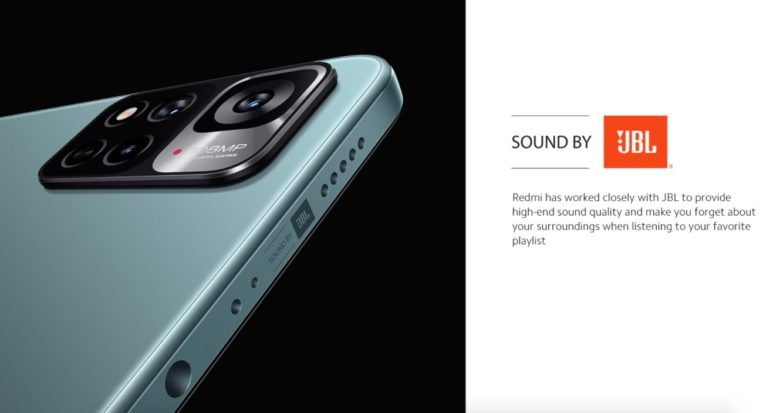

Adquira já o seu Xiaomi Redmi Note 11 Pro+ 5G e experimente a última geração de tecnologia móvel
Aqui estão as principais especificações do Xiaomi Redmi Note 11 Pro+ 5G
- Tela AMOLED de 6,67 polegadas com resolução Full HD+ Processador Qualcomm Snapdragon 750G de 8 núcleos 6GB de RAM e 128GB de armazenamento expansível via microSD
- Câmera tripla traseira com 64MP (principal), 8MP (ultra-wide) e 5MP (profundidade) Câmera frontal de 16MP
- Bateria de 5.000mAh com carregamento rápido de 33W Sistema operacional Android 11 com MIUI 12 5G, Bluetooth 5.1, NFC, GPS, USB-C
- Resistente a água e poeira (IP53) Medidas: 164,5 x 76,1 x 8,1 mm
- Peso: 193g
Espero que essas informações sejam úteis! Se você tiver mais alguma pergunta ou precisar de mais ajuda, basta perguntar.
Faça já a sua encomenda do Redmi Note 11 Pro+ 5G e descubra porque ele é o celular do futuro
Avaliações Do Brasil

"O Redmi Note 11 Pro+ 5G está esperando por você. Clique aqui para adquirir o seu aparelho agora mesmo"
Com sua tela AMOLED de 6,67 polegadas e resolução Full HD+, o Xiaomi Redmi Note 11 Pro+ oferece imagens nítidas e vibrantes, perfeitas para assistir vídeos ou jogar seus jogos favoritos. Além disso, o processador Qualcomm Snapdragon 750G de 8 núcleos garante um desempenho rápido e suave, enquanto os 6GB de RAM e 128GB de armazenamento expansível garantem espaço suficiente para todas as suas fotos, vídeos e aplicativos.
Mas a câmera tripla traseira de 64MP é onde o Redmi Note 11 Pro+ realmente brilha. Com uma câmera principal de 64MP, uma câmera ultra-wide de 8MP e uma câmera de profundidade de 5MP, você pode tirar fotos incríveis em qualquer situação. E com a câmera frontal de 16MP, as suas chamadas de vídeo e selfies ficarão ainda melhores.
Outro destaque do Redmi Note 11 Pro+ é a bateria de 5.000mAh, que oferece uma duração incrível e carregamento rápido de 33W para que você possa usar o celular por mais tempo sem precisar recarregar. Além disso, o aparelho é resistente a água e poeira (IP53), então você pode usá-lo com tranquilidade em qualquer lugar
E por fim, o Redmi Note 11 Pro+ vem com o sistema operacional Android 11 e a interface MIUI 12, que oferecem uma experiência de usuário intuitiva e personalizável. Com 5G, Bluetooth 5.1, NFC, GPS e USB-C, o celular oferece conectividade rápida e fácil com outros dispositivos.
Em resumo, o Xiaomi Redmi Note 11 Pro+ é o celular perfeito para quem busca alta performance, qualidade de imagem e conectividade de última geração. Com suas especificações de primeira linha e design elegante, ele é a escolha certa para quem quer o melhor do mundo mobile.
Não perca mais tempo e adquira já o seu Xiaomi Redmi Note 11 Pro+ 5G em Cinza Preto. Clique no botão abaixo para adquirir o seu aparelho agora mesmo ou entre em contato conosco para mais informações. Estamos sempre à disposição para atender a todas as suas necessidades.
